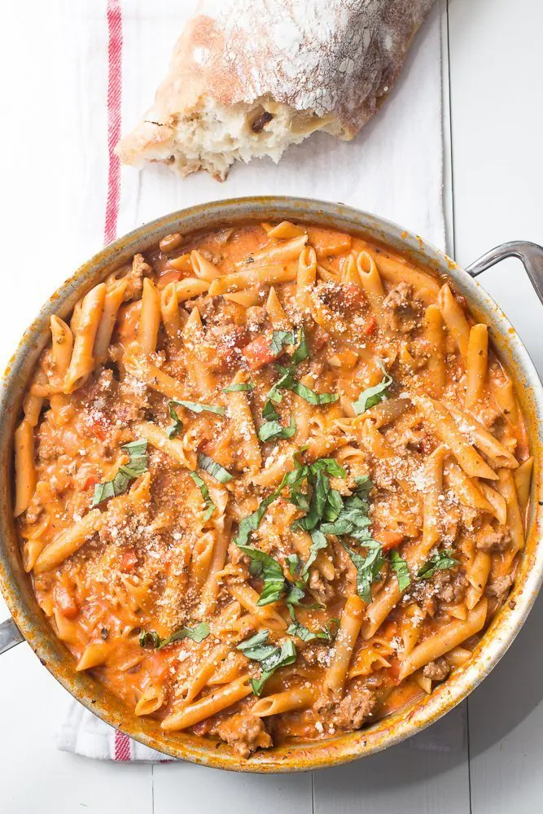

Pasta

One Pot Creamy Sausage Pasta
Description
This creamy dish is extremely creamy
Ingredients
- 2 tbsp olive oil
- red pepper, chopped (about 1 ½ cups)
- 1 medium onion, chopped (about 1 cup)
- 4 cloves garlic, minced
- Kosher salt and freshly ground black pepper
- ½ tsp ground fennel or 1 tsp fennel seeds
- ¼ tsp red pepper flakes
- 1 lb ground hot or sweet sausage (or a mix of both)
- ¼ cup dry white wine
- 16 oz marinara sauce
- 6 tbsp heavy cream
- 8 oz short pasta shapes, like penne
- 4 cups water
- ¼ cup grated Parmesan cheese
- ¼ cup chopped fresh basil
Steps
- Heat the oil in a large skillet over medium-high heat and saute the peppers and onions until they start to soften, about 8 minutes. Stir in the garlic, fennel, red pepper flakes, and a good pinch of salt and a few cranks of black pepper. Crumble the sausage into the skillet and cook with the peppers and onions until browned. Pour the wine into the skillet and scrape up the bits on the bottom of the pan. Pour the sauce and 3 cups of water into the skillet and then stir the pasta into the mixture until well-combined.
- Bring the liquid to a boil, reduce the heat to medium-low, and cover. Allow the liquid to simmer, stirring occasionally at first and more frequently towards the end to prevent the pasta from sticking, for about 15 to 17 minutes. Every 5 minutes or so, stir in a little of the remaining cup of water. If the liquid starts boiling over, reduce the heat to low.
- When the pasta is cooked through, stir in the cream, Parmesan cheese, and most of the basil (reserving a little for garnish). Allow the cream to heat through for 2 minutes. Season with salt and pepper to taste. Allow the dish to cool for 5 minutes, sprinkle the remaining basil over the top, and serve.